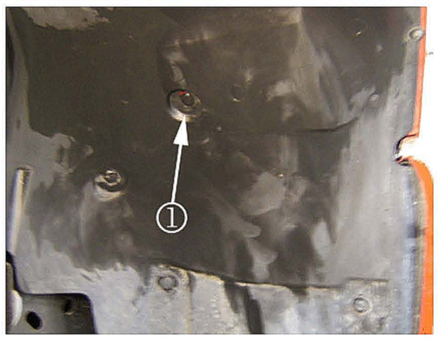

Body - Buzz/Rattle From R/H Front Fender on Accel.
Bulletin No.: 07-08-59-003Date: June 06, 2007
TECHNICAL
Subject:
Loud Buzz or Rattle Noise from Right Front Fender Area on Moderate to Hard Acceleration and/or Braking Torquing Around 1800-2000 RPMs or Before 1-2 or 2-3 Shift (Install Closed Cell Foam to Right Front Fender)
Models:
2007-2008 Cadillac Escalade, Escalade ESV, Escalade EXT
2007-2008 Chevrolet Avalanche, Silverado, Suburban, Tahoe
2007-2008 GMC Sierra, Yukon, Yukon Denali, Yukon Denali XL, Yukon XL
Condition
Some customers may comment on a buzz or rattle noise from the right front fender area on moderate to hard acceleration and/or brake torquing around 1800-2000 RPMs or just before the 1-2 or 2-3 shift.
Cause
The radiator surge tank and/or the inner wheelhouse liner may be contacting the right fender.
Correction
Install closed cell foam to the right front fender using the steps below:
Verify the condition.
Open the hood.
Remove the air cleaner assembly. Refer to Air Cleaner Assembly Replacement in SI.
Remove the four bolts from the air cleaner adapter bracket.
Remove the air cleaner adapter bracket.

Remove the plastic retainer (1) from the right front center inner wheelhouse liner. Cut a piece of closed cell foam, P/N P46510, to 32 mm (1-1/4 in) length.
Make a hole in the center of the foam with a 6 mm (1/4 in) drill bit by hand.
Install the piece of foam between the wheelhouse liner and the fender from inside the engine compartment at the removed retainer location.
Tip
Line up the hole in the foam with the hole in the fender and wheelhouse liner.
Install the plastic retainer into the right front wheelhouse liner, foam (1) and the fender.
Mark the two locations on the right fender where the radiator surge tank mounting tabs contact the fender as shown above. Remove the nut and bolt from the radiator surge tank.
Do Not disconnect any hoses or drain the coolant.
Remove the radiator surge tank from the fender retaining slot by pulling upward.
Reposition the radiator surge tank away from the fender.
Cut three pieces of closed cell foam, P/N P4615, to 50 mm (2 in) lengths.
Clean the area above the marks on the right front fender with glass cleaner.
Start by installing the center piece of foam vertically at the hole (1) in the fender 20 mm (3/4 in) above the right fender retaining slot.
When attaching the foam, try to keep the foam uniform and even across the top for appearance purposes.
Attach the other two pieces of foam vertically with no gaps to the left side and right side of the center piece of foam as shown above.
Tip
Use a plastic putty scraper to help prevent the rolling of the foam when installing the radiator surge tank as shown above. Install the radiator surge tank plastic tab into the matching retaining slot inside the right inner fender.
Install the air cleaner adapter bracket while aligning and centering the front mounting hole for the radiator surge tank. Install the four bolts for the air cleaner adapter bracket and tighten.
Tighten
Tighten the bolts to 10 N.m (89 lb in).
Install the nut and bolt securing the radiator surge tank.
Tighten the nut and bolt.
Tighten
Tighten the nut and bolt to 10 N.m (89 lb in).
Install the air cleaner assembly. Refer to Air Cleaner Assembly Replacement in SI.
Close the hood.
Verify that the condition has been corrected.
Parts Information
Order Adhesive Back Shim Stock from Kent Automotive at 1-888-YES-KENT or online at www.kent-automotive.com.
Warranty Information
For vehicles repaired under warranty, use the table.

Disclaimer